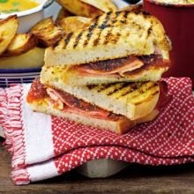
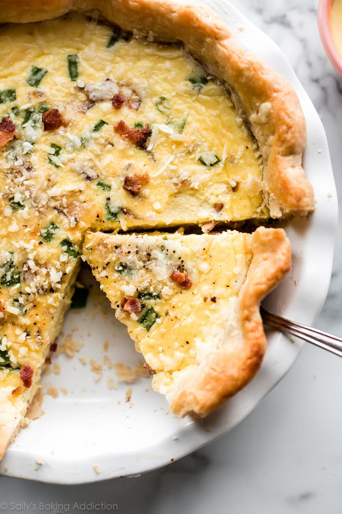

Back to Home
Generated Recipes
Using tomato, cheese and bacon
Uses only what you have
Bacon, tomato & cheese tortilla
25 min
Serves 2
Saves 3 items
Limited ingredients
See all
Bacon roast onion salad
20–40 min · uses tomato, bacon
All in

Cheese & tomato toastie
10 min · uses all 3
All in

Bacon & cheese quiche
50 min · needs eggs, cream
+2